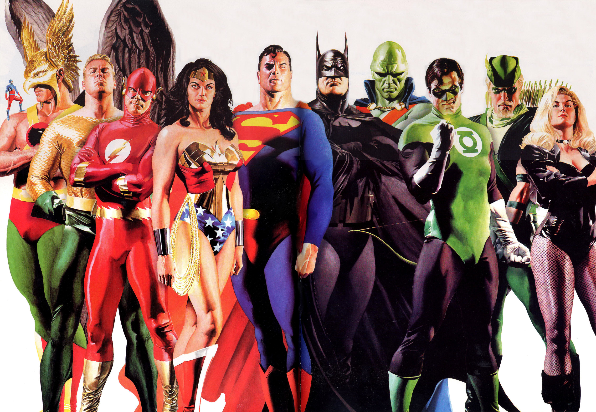
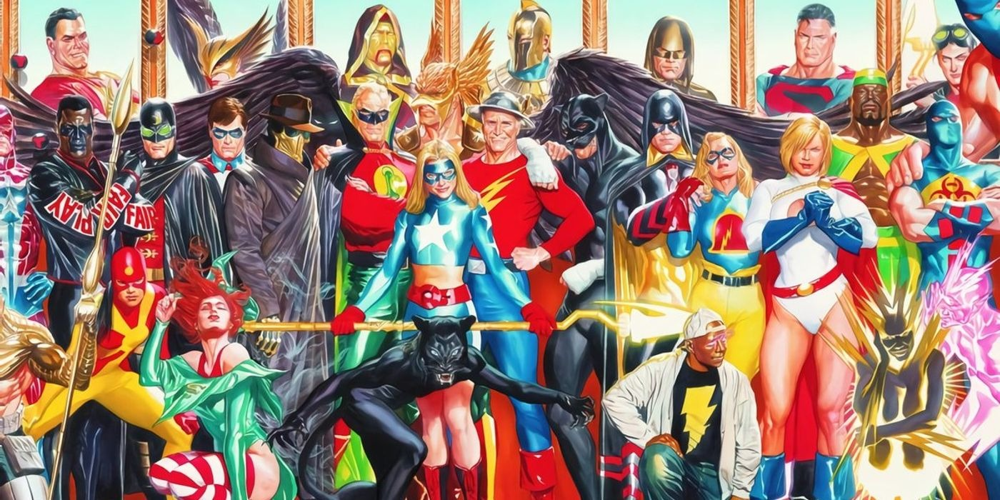
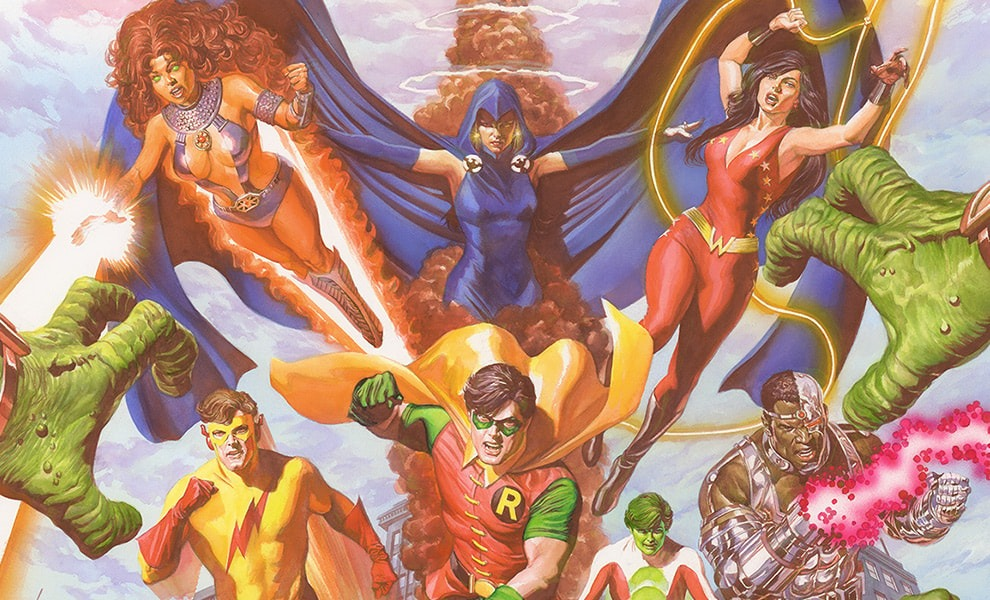

Esta es una pagina dedicada a los super heroes de DC cómics
Justice League (JL)

La Justice League (JL) es el equipo de superhéroes más importante y reconocido de DC Comics, reuniendo a los héroes más poderosos de la editorial.
Fundada en su versión clásica por Superman, Batman, Wonder Woman, Flash (Barry Allen), Green Lantern (Hal Jordan), Aquaman y Martian Manhunter,
la Liga ha contado con numerosas alineaciones a lo largo de los años, incorporando a héroes icónicos.
Justice Society of America (JSA)

La Justice Society of America (JSA) es el primer gran equipo de superhéroes creado por DC Comics. Es el precursor de todos los equipos de superhéroes.
A diferencia de la Justice League, la JSA se caracteriza por su legado y la tradición de héroes que pasan su manto a nuevas generaciones.
Sus miembros más icónicos incluyen a Doctor Fate, Hawkman, The Flash (Jay Garrick), Green Lantern (Alan Scott), Hourman, Sandman, The Atom y Spectre.
Con el tiempo, el equipo ha evolucionado, incorporando nuevos héroes y manteniendo vivo el espíritu heroico a través de las décadas.
Teen Titans / Titans

Los Teen Titans, o simplemente Titans, son un equipo de jóvenes superhéroes de DC Comics, formado originalmente por los compañeros juveniles de los héroes
más grandes del mundo. Su alineación clásica incluye a Robin (Dick Grayson), Kid Flash (Wally West), Aqualad (Garth), Wonder Girl (Donna Troy) y Speedy (Roy Harper).
Con el tiempo, el equipo evolucionó, destacando su era más icónica en los años 80 con la llegada de Cyborg, Starfire, Raven y Beast Boy.
Su legado ha perdurado, inspirando a nuevas generaciones de jóvenes héroes a unirse a sus filas.